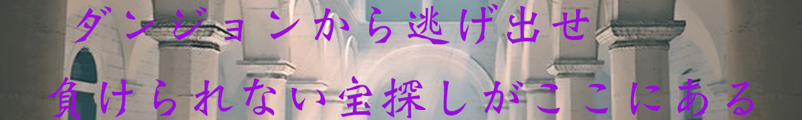

全関門突破だ！
よくやり切ったよ。きみの活躍のおかげで無事お宝を持って脱出できたみたいだね。
いやぁ、見てる方もなかなか楽しませてもらった。ありがとう！
みんな無事に出て来られてよかった...「星超綺麗じゃん！！」仲間のそんな声が聞こえふと窓を開けると
沢山の星、雲が少なくてよく見える。だいぶ離れたところにいる仲間達も同じ空を見上げているのだろう。
いつもと違いみんなの表情も見えない。少し寂しいなぁ、早く帰ってこーい！
そういえば、出口のそばの石に何か文字があったよな… 確か、
答えの頭と尻を取りて ３ 10 1 8 7 9 4 2 6 5 の順に並べよ
だったか。メモ取っといて良かった。
つまり、「たからさがし」のた・し、「きすう」のき・う、「だいや」のだ・や
「はさみうち」のは・ち、「ゆうやみ」のゆ・み、た・しから１、２とすると…
「き、み、た、ち、は、ゆ、う、し、や、だ」 なるほど 「君たちは勇者だ」か
ダンジョンのやつ喋り方は気に食わなかったが、粋な事をしてくれるじゃないか
< p class = "text-center" >楽しんでもらえたかな？それでは、またどこかで！！
ありがとうございました！
Special Thanks
リアル脱出ゲームとは
2004年に発表されたネットで爆発的に盛り上がった「脱出ゲーム」を、そのフォーマットそのままに現実世界に移し替えた大胆な遊びが「リアル脱出ゲーム」。マンションの1室や廃校、廃病院、そして東京ドームや六本木ヒルズなど、様々な場所で開催され、2007年に初開催して以降、現在までで累計820万人以上を動員。日本のみならず上海、台湾、シンガポールやサンフランシスコなど全世界で参加者を興奮の渦に巻き込み、男女問わずあらゆる世代を取り込む、今大注目の体験型エンターテインメント。
このゲームの企画者
Web制作 M.Y. ・ S.N. ・ R.I.
問題制作 A.H. ・ Y.A.
画像制作 S.E. ・ H.T. 以上7名